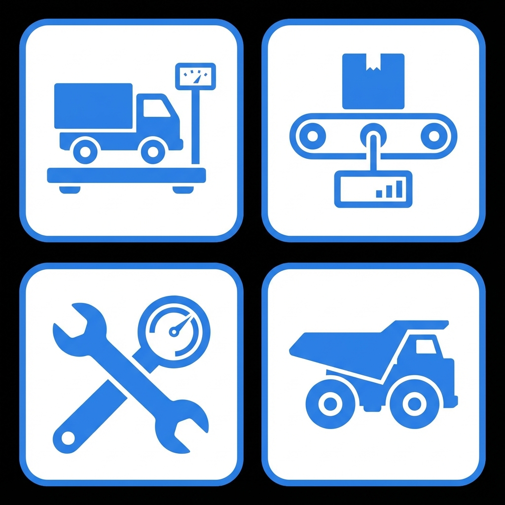

Here are the custom icons generated based on the Accurate Industries website style. These represent Weighbridges, Belt Scales, Calibration Tools, and Mining Equipment.

File Location: public/icons/accurate_icons.png
You can crop individual icons from this sheet for use in the application.